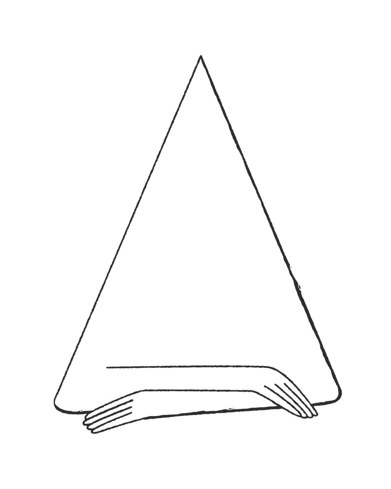
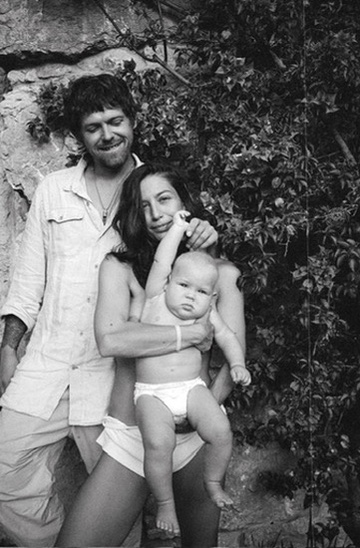
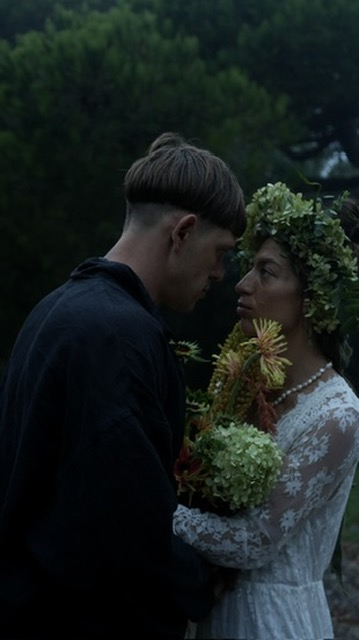
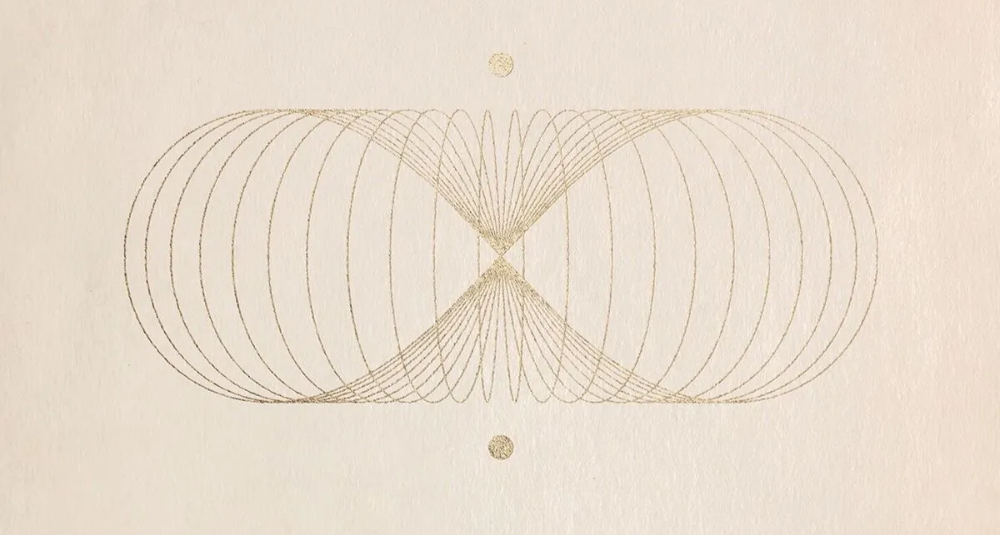
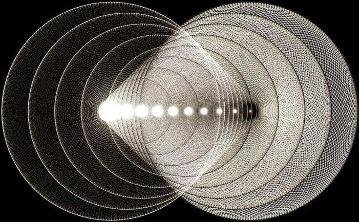

Мы прошли путь от самых страстных любовников до раздражения, бытовых ссор и грани развода, — и вернулись к страстным любовникам. Но уже в роли не беззаботных голубков, а кайфовых родителей, духовных учителей друг другу, лучших друзей, партнерах в делах, безграничному творчеству и к постоянной игре. Мы играем как БОГИ. Мы и есть БОГИ (по крайней мере, мы так решили).
Мы пробовали строить семью как все. Нам не понравилось. Прочитайте этот текст, вам тоже так не понравится, 100%
У нас было 4 свадьбы (и будет пятая). Последние полгода мы проводим по 6 часов в практиках и церемониях, создавая модель резонансной семьи. Мы проверили на себе, как это работает. Готовы передать не просто модель, но и опыт, вам.
Контекст
Есть всего три сценария, по которым развивается пара в общепринятой системе координат. Они вам не понравятся, но вы точно их проживали.
Классика жанра. Мужчина зарабатывает, принимает решения, задает вектор. Женщина — «за мужем». Даже если она тоже зарабатывает, эмоциональный и стратегический контроль — за ним. Ее роль — обслуживать, поддерживать, терпеть. Если она начинает «слишком много хотеть» — это воспринимается как бунт. Дети в этой системе — инструмент привязки и выполнения социального контракта. Секс — его потребность, её обязанность. Творчество — его, если останется время после работы. Её — только если он разрешит. Итог: выгорание. Два одиноких человека в одной квартире. Один — с короной. Другая — со стиснутыми зубами.
Всё чаще, особенно в «продвинутых» кругах. Она — генератор идей, энергии, решений. Он постепенно оседает. Становится удобным, комфортным, бесконфликтным... и бесполезным. Она тянет всё. Организует, планирует, вдохновляет — и медленно ненавидит его за это. Он чувствует её недовольство, но вместо реакции — уходит в телефон, в тупой юмор, в алкоголь. Секс умирает. Уважение — ещё быстрее. Она начинает компенсировать нехватку через «духовные практики», камни и ретриты, не замечая, что это — бегство от живой боли. Итог: она тянет на себе семью, работу и его, пока не рухнет. Он — просто растворяется. Не от злости. От безразличия.
Так называемый «цивилизованный» вариант. Все по-честному: обязанности поделены, бюджет общий (или раздельный — для безопасности), конфликты решаются «через разговор». Никто никому не давит. На поверхности — идеальная картинка. Внутри — нейтралитет. Без полярности нет химии. Без химии нет энергии. Без энергии нет секса, дерзости, масштаба. Два человека играют в «нормальную семью», которая скучна настолько, что дети с 10 лет живут в телефоне, потому что дома нечего ловить. Итог: правильно, стерильно, мертво. Развод или тихая агония на 20 лет.
Как бы вам не хотелось возразить, глобально — не получится. Потому что так построено наше общество — основанное на старой патриархальной системе. Там, где нет гармонии, синергия невозможна.
Последние полгода мы исследуем эти механизмы. Мы нашли, на чем они держаться и почему в рамках контрактной модели их невозможно обойти...
А теперь представьте, что таки может получиться по-другому.

Это не «курс про отношения». И мы точно не будем учить вас «искать компромиссы» или «работать над собой». Мы здесь, чтобы сменить саму архитектуру: выйти из уставшего сценария, где вы тратите силы на обслуживание семьи (или одиночества), в реальность, где близость становится вашим ядерным реактором. Где 1+1 создает поле, заряжающее всё остальное — от масштаба проектов до физического здоровья. Приглашаем вас не «послушать лекции», а прожить это.
Личная история
Лиза. Про честность и детей.
Когда я узнала что беременна нашим первым ребенком, я была в ужасе. Полное осознание того, что я совершенно не готова быть мамой. Абсолютное нежелание быть мамой. Страх перед тем, как изменится мое тело. Бесконтрольные рыдания от мысли, что моя свобода закончилась.
У меня были страшные, тяжелые роды. Я была на грани смерти, роды длились больше суток, меня разрезали, ребенка тащили вантузом. Ребенок не брал грудь, заражение, температура, три больницы за неделю.
Это был самый тяжелый период моей жизни. Но он же стал переломным. Начало войны. Полное крушение прежней реальности. Роды, материнство, потеря идентичности, бессонница, потеря дома и привычного мира — всё это было не «кризисом», а точкой полной пересборки.
Сегодня наша дочь Арина — ей 3 года — ни разу серьезно не болела. Ни разу не устроила истерику. Она растет в поле, где нет борьбы за внимание, нет подавления, нет «положено так». Не потому что мы идеальные родители, а потому что мы выстроили другую архитектуру.

Глазами Влада
Когда мы с Лизой встретились, это была безусловная страсть. Мы горели. Физически, ментально, химически — идеальный резонанс. Казалось, что так будет всегда. Было очевидно, что мы нашли то самое. Навсегда.
А потом приходит быт. Беременность. Война. Переезд. Бессонные ночи. Деньги. Ответственность. И ты понимаешь, что вся эта «любовь» была лишь первым топливным ускорителем, который выгорел за два года, оставив двух уставших взрослых людей с ребенком, раздражением и вопросом: «и что теперь?».
Мы были на грани развода. Не потому что не любили. А потому что не знали, как любить дальше. Модели «терпеть ради детей» или «найти компромисс» вызывали тошноту. Мы не могли себе позволить посредственные отношения.
И мы начали копать. Не в психологии, не в попсовых коучингах. А в физике. В нейробиологии. В древних традициях, которые были уничтожены именно потому, что работали. Мы построили модель, проверили на себе и получили результат, который невозможно объяснить в рамках «нормальных отношений».
Сейчас мы живем в Лаборатории Квантового Сознания. Мы проводим по 6 часов в день в практиках и церемониях. Мы исследуем границы того, что возможно между двумя людьми. И мы точно знаем: то, что у нас сейчас — это не «хорошие отношения». Это ядерный реактор.


Программа. Direct Experience
Мы не читаем лекции. Мы передаем состояние. Это закрытый, без цензуры формат, где мы говорим и показываем то, что невозможно выложить в открытый доступ.
Прежде чем строить «МЫ», необходимо выстроить здоровое «Я». Невозможно резонировать, если ты сам — расщеплен. Поэтому программа начинается с фундамента.

- Новая Иерархия — пересборка внутренней системы координат. Выход из вертикали подавления в спиральную модель.
- Архитектура Пола — деконструкция навязанных гендерных программ. Возврат к природной полярности.
- Синхронизация Триады — тело, ум, дух. Три центра, которые система намеренно расщепила.
- Гармонизация Проявления — как перестать «казаться» и начать «быть». Аутентичность как энергетический источник.
- Точка Пробуждения Души — момент, когда вы перестаете жить по сценарию и начинаете жить из источника.
- Поток Творчества — активация канала, через который реальность создается, а не обслуживается.

- Квантовое Сознание Пары — что происходит, когда два человека перестают бороться и начинают резонировать.
- От «Я» к «МЫ» — переход от двух автономных систем к единому полю. Без потери себя.
- От Контрактов к Культивированию — демонтаж модели «ты мне — я тебе». Создание среды, где оба растут экспоненциально.
- Энергетика Семьи — семья как энергетическая система. Как перестать «тратить силы на семью» и начать получать из неё энергию.
- Сексуальность и Алхимия — возврат Эроса. Сексуальная энергия как топливо трансформации, а не потребления.
- Изобилие — почему пары в резонансе зарабатывают больше. Экономика поля.
- Счастливые Дети — дети, которые растут в поле, а не в системе контроля. Без истерик, без подавления, без борьбы за внимание.
Формат
Глубокие сессии, где мы разбираем модель по слоям. Физика, нейробиология, древние традиции — переведенные на живой язык. Не академические лекции, а передача карты территории, которую мы прошли.
Практики, медитации, телесные сессии и церемонии, которые невозможно описать текстом. Закрытый формат без цензуры. То, что мы делаем каждый день в нашей лаборатории — адаптировано и передано вам. Это не про «подышать». Это про прожить.
Закрытый чат участников. Поддержка между встречами. Индивидуальные рекомендации от нас. Доступ к записям. Поле не заканчивается после звонка — оно продолжает работать.
Условия
Мы открываем лабораторию на короткое время. Это не массовый продукт. Нам важен резонанс, а не количество.
Идеально — парой. Но если партнер пока не готов, вы можете начать трансформацию один/одна. Поле работает.
Q&A
А если я сейчас одна? Мне есть смысл идти?
Да. Блок «Я» — это фундамент. Без здорового «Я» невозможно построить «МЫ». Если вы сейчас одна/один — это идеальный момент, чтобы выстроить себя до того, как притянуть партнера. Из целостности вы притягиваете резонанс. Из дефицита — контракт.
Мой партнер — скептик. Он/она не хочет идти.
Начните с себя. Когда один элемент системы меняет частоту, второй неизбежно реагирует. Вы не можете заставить партнера трансформироваться. Но вы можете стать настолько другим/другой, что старая модель станет невозможной. Это честнее, чем ультиматумы.
Это — техники из какой-то конкретной системы?
Нет. Это синтез. Физика волновых процессов, нейробиология, древние традиции (тантрические, шаманские, алхимические), психология развития — и наш личный, проверенный на себе опыт. Мы не принадлежим ни одной школе. Мы берем то, что работает, проверяем и передаем.
Зачем закрытый формат «без цензуры»? Это что, порно?
Нет. Но мы говорим о сексуальности, теле, энергии, измененных состояниях сознания и вещах, которые невозможно обсуждать в публичном поле без искажения. Закрытый формат — это безопасность для честности. Мы не фильтруем. Мы не адаптируем под «приличное общество». Мы передаем как есть.
Будет сложно?
Да. Любая реальная трансформация — это не «приятный вебинар». Это демонтаж старого и строительство нового. Будут моменты, когда захочется уйти, закрыться, вернуться в знакомый дискомфорт. Но именно там, на грани — начинается прорыв. Мы будем рядом.
У нас всё плохо. Мы на грани развода. Нам поможет?
Возможно. Но только если оба готовы к честности. Мы не спасаем отношения. Мы даем инструменты для создания новых — с тем же человеком или без него. Если ваш союз способен к трансформации — вы получите карту. Если нет — вы получите ясность. И то, и другое ценно.
У нас всё «нормально». Без скандалов, но и без огня. Нам это нужно?
«Нормально» — это третий сценарий. Самый опасный, потому что он маскирует медленное умирание под стабильность. Если вы чувствуете, что живете в нейтралитете, — это красный флаг. Вы не в безопасности. Вы в анестезии. Этот курс вернет полярность и огонь — если вы готовы.
Я мужчина. Мне кажется, это всё «женские штучки» про потоки и энергии.
Это физика. Волновая механика, нейробиология, теория систем. Если вам ближе язык инженерии — мы говорим на нем. Резонанс — это не эзотерика. Это измеримый феномен, который используется в акустике, электронике и квантовой механике. Мы просто применяем его к отношениям. Влад — технарь, предприниматель и скептик. Если его убедило — вас тоже убедит.
Сколько времени это займет?
Основная программа — 2 месяца. 16 встреч (8 лекционных + 8 церемоний). Плюс работа между встречами. Это не фоновый курс «послушал и забыл». Это интенсив, который требует вашего присутствия и честности. Рассчитывайте на 4-6 часов в неделю.
Почему так дорого/дешево?
2 000 евро — это стоимость одной сессии у хорошего семейного терапевта, умноженная на 10. Мы даем 16 встреч, закрытое поле, практики и личный доступ. Это не дорого. Это порог входа, который фильтрует туристов от тех, кто действительно готов к трансформации. Если вы думаете «дорого» — спросите себя, сколько вы уже потратили на терапию, коучей и курсы, которые не сработали.